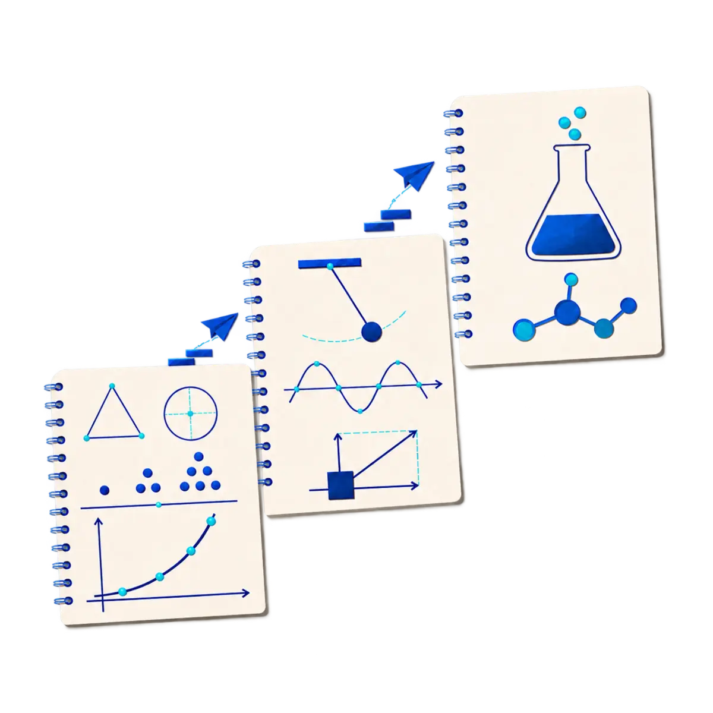

Enseñanza humana donde importa el criterio. IA donde importa la constancia.

Cálculo, álgebra, física y química: las que reprueban generaciones enteras.
Explica el paso 3 a las 11 pm y avisa al profesor si algo no avanza.
Cada ejercicio actualiza tu dominio por tema. No un promedio: una curva viva.
Plataforma, modelos e infraestructura hechos en casa por VictoriaDEV.
VictoriaEDU es un ecosistema de aprendizaje para estudiantes en México: no un catálogo de especialidades, sino la escuela paralela de las materias que sí tienes en tu plan de estudios. Cálculo diferencial el jueves, el examen de física el lunes, y el semestre entero en juego.
Nacimos de esa distancia: estudiamos con apuntes fotocopiados, resolvimos guías sin nadie que nos explicara el paso 3, y aun así entramos y terminamos. La educación STEM no debería depender de tu código postal.
Enseñanza humana donde importa el criterio. IA donde importa la constancia.
Explica el paso 3 a las 11 pm, propone la ruta y practica contigo. Sus límites son explícitos y un profesor valida cada ruta antes de asignarla.
Combinamos lo que ninguna plataforma sola resuelve: profesores reales que dan clase, corrigen y presionan cuando hace falta, y un tutor de IA que acompaña las otras 23 horas del día.
La IA no califica el destino de nadie: sugiere ruta, detecta huecos y practica contigo. Las decisiones pedagógicas siempre las revisa un profesor con nombre y apellido. No prometemos aprobar garantizado; prometemos que vas a llegar preparado y sabiendo exactamente en qué estás parado.
Cada ejercicio que resuelves actualiza la estimación de tu dominio por tema. No un promedio: una curva de conocimiento viva que decide qué practicas mañana.
Reportes por tema, percentil contra tu generación y alertas tempranas cuando el avance se cae. Lo que ve el alumno lo ve su profesor y su familia.
Plataforma, modelos e infraestructura desarrollados por VictoriaDEV, nuestra empresa de tecnología. Sin dependencias que no controlemos.
La IA no aparece como adorno: forma parte del diseño pedagógico. Óscar completó un diplomado de 96 horas en IA generativa aplicada a la educación por la Universidad Internacional de La Rioja en México. En el producto, esa formación se traduce en diagnóstico, retroalimentación y rutas de aprendizaje — no en un chatbot pegado al final.
Las ingenierías del equipo están tituladas ante el IPN; las cédulas se pueden consultar en el Registro Nacional de Profesionistas.
Producto, educación e IA
Ingeniero aeronáutico del IPN, campeón en concursos de diseño de aeronaves y Demand Forecaster en GAFSACOMM. Pronostica demanda aeroportuaria para programas de inversión y lidera producto en VictoriaEDU.
Matemáticas y clase en vivo
Ingeniero aeronáutico del IPN, campeón en concursos de matemáticas y especialista en operaciones aeronáuticas y finanzas. Convierte problemas complejos en explicaciones claras y accionables.
Hoy da el curso de matemáticas para la segunda vuelta del IPN: clase de fin de semana, grupos de estudio y grabaciones para quien no alcanza el horario. Los testimonios de este mes salen de ese grupo.
Arquitectura y desarrollo de plataforma
Ingeniero en Sistemas Computacionales por ESCOM-IPN y Software Developer en Oracle México. Experiencia en análisis de imágenes y datos, sistemas y desarrollo con Java, C/C++ y Python.
La IA decide el orden y la dosis. El profesor decide el criterio.
Mide tema por tema, no un promedio.
Ordena los temas por impacto en tu puntaje.
En vivo, explicando el criterio y no solo el procedimiento.
Ejercicios diarios que se ajustan a tus errores.
Ensayo completo en condiciones reales.
La atención y calidad del curso superó mis expectativas. La forma de enseñanza innova en la relación didáctica entre maestro y alumno.
Cifras del historial docente de Óscar Cruz, incluidas las generaciones que preparó antes de fundar VictoriaEDU. Emiliano Ricardez da el curso de matemáticas de la segunda vuelta y Brando Sánchez construye la plataforma. Los resultados varían por alumno y no garantizan admisión.
Puntajes de corte históricos de 105 carreras del IPN.
El mejor curso que he tenido en mi vida.
10 reactivos reales del examen del IPN, sin cronómetro y sin cuenta para empezar. Al terminar creas tu cuenta y ves tu puntaje. El desglose por materia y la revisión de cada respuesta vienen con el simulacro completo.
¿Prefieres WhatsApp?Lo presentas de una vez. Al terminar creas tu cuenta con tu correo —o entras con Google— y ahí aparece tu resultado.